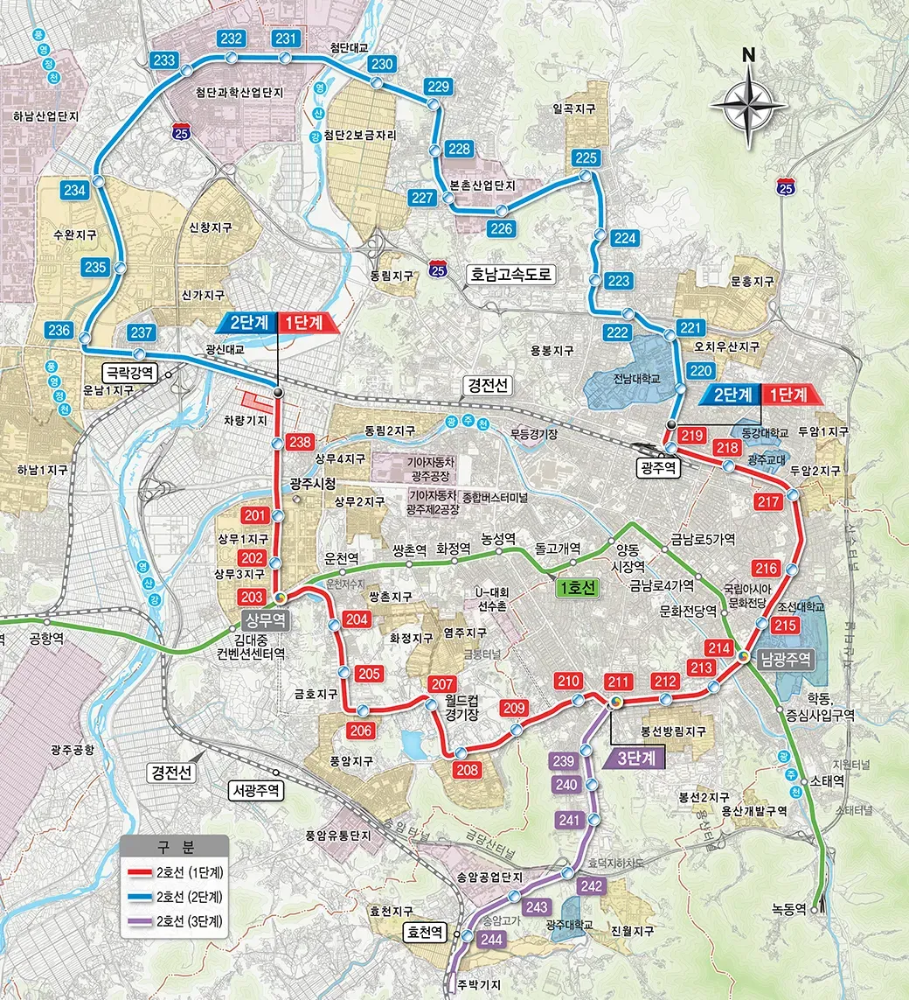

기준일:
광주 도시철도 2호선,
이렇게 진행되고 있습니다
- 총사업비
- 3조 2,430억 원
- 총연장·정거장
- 41.891km·44개소확대순환선
- 1단계 개통 목표
- 부분 개통 검토
- 2단계 전 구간
개통 일정
언제 탈 수 있나요?

| 구분 | 구간 | 연장 | 정거장 | 개통 목표 |
|---|---|---|---|---|
| 1단계 |
|
17.005km | 20개소 | |
| 2단계 |
|
20.046km | 18개소 | |
| 3단계 |
|
4.84km | 6개소 | - |
부분 개통으로 먼저 달리겠습니다
시민들이 도시철도를 보다 빨리 이용할 수 있도록 부분 개통을 추진합니다.
- 구간
- 양산동~첨단·수완·신가(11공구~14공구)
- 규모
- 11.9km정거장 9개소
- 부분 개통 예상 시기
- 단축 효과
- 전 구간 동시 개통 대비 1년 8개월
주요 특징
도시철도 2호선 어떤 특징이 있나요?
-
확대순환선
41.891km로 도심과 신도심을 크게 한 바퀴 잇습니다.
-
1호선 환승 가능
상무역(1호선), 남광주역(일반철도)에서 환승 교통 편의 향상
-
저심도 승강장
지하 1층 저심도 승강장으로 이용객의 접근 동선이 짧습니다.
-
배차
출퇴근 4분 30초~5분, 평시 8~10분으로 기다림을 줄입니다.
-
완전 무인 운전
기관사 없는 UTO(GoA 4) 방식으로, 국내에서 40km 이상 구간에 적용하는 첫 사례입니다.
-
국산 기술
한국형 고무차륜 경전철(K-AGT)과 무선통신 기반 열차제어(RF-CBTC)를 씁니다.
최첨단 기술이 집약된 완전자동무인운전시스템
- 차량 길이
- 2.4m(폭)×3.5m(높이)×20.92m(길이) / 1편성
- 최대 속도
- 70km/h
- 탑승 인원
- 153명 / 1편성(객차 2대)
- 종합관제실에서
실시간 감시·제어 - 편의성·안정성
스마트 전동차 - 방풍문·미세먼지
자동측정기
공정률
공사는 얼마나 진행되었나요?
도시철도 2호선 1단계 공정률
기준
통합공정률
90.32%
- 전월누계
- 88.99%
- 금월실적
- 1.33%
- 잔여
- 9.68%
9월주요 공정 실적
- 정거장 벽체 마감공사
- 정거장 내 배관·배선공사
- 본선 궤도공사 안내레일 설치
10월주요 공정 계획
- 정거장 벽체 마감공사
- 정거장 내 배관·배선공사
- 전동차 반입(2~7편성, 12량)
- 본선 주행로 연마
분야별 세부 공정률
| 구분 | 전월누계(A) | 금월실적(B) | 금월누계(A+B) |
|---|---|---|---|
| 토목 | 98.99% | 0.10% | 99.09% |
| 궤도 | 75.90% | 8.50% | 84.40% |
| 건축 | 41.28% | 5.09% | 46.37% |
| 송변전 | 44.02% | 12.78% | 56.80% |
| 일반전기 | 48.23% | 7.13% | 55.36% |
| 전차선 | 22.12% | 6.38% | 28.50% |
| 기계 | 36.45% | 13.27% | 49.72% |
| 소방 | 68.26% | 1.04% | 69.30% |
| 신호 | 57.61% | 1.63% | 59.24% |
| 통신 | 38.43% | 0.69% | 39.12% |
운행 효과
광주 도시철도 2호선 운행 효과는?
총사업비
3조 2,430억 원(국비 60%, 시비 40%)
- 사업비의 60%를 국가가 지원
- 시비를 연도별로 분산 투자하고 지방채를 발행해 시의 재정 부담 최소화
교통혼잡비용 연간 1,800억 원 절감
중복 노선 감축 등 시내버스 재정지원금 연간 약 81억 원 감소 추정
신규 도로 개설 축소에 따른 비용 절감(도로율 10% 향상 시 2.6조 원 예상)
도시철도 2호선 건설 효과
-
주요 생활권을 30분 내 신속하게 연결
- 도시철도+급행버스 중심의 간선망+지선망 연결
- 도시철도 교통 수송 분담률 8.7% 증가 연간 20만 톤 도로교통 미세먼지 감소
- 시민 교통 수혜율 확대 17%(25만 명) → 71%(103만 명)
- 타 교통수단에 비해 저렴하고 정시성, 신속성 확보
- 역세권 주변 상권 형성으로 도심 발전
-
지역 건설업 활성화 및 신규 일자리 창출 기대
(출처: KDI 보고서)
구분 기대 효과 생산 유발 효과 1조 8,011억 원 부가가치 유발 효과 8,099억 원 고용 유발 효과 18,191명 취업 유발 효과 19,227명
시민 질문
시민이 자주 묻는 질문
공사로 막혔던 도로는 어떻게 되나요?
시민 불편 사항이었던 도로 개방의 경우 1단계 구간은 전 구간 개방이 완료된 상황입니다. 2단계 우선 개통 구간은 2030년 상반기까지 개방을 마무리할 예정이니 시민 여러분의 너른 양해를 부탁드립니다.
도시철도 2호선 연장 사업 배경이 궁금해요
공사 중 예상하지 못한 암반과 매설물이 발견됐고, 건축·전기·신호·차량 같은 후속 공정을 함께 맞추는 과정에서 일정을 다시 점검하게 됐어요. 시는 앞으로 남은 공정을 개통까지 통합 관리하고, 일정에 영향을 주는 핵심 공정을 집중적으로 관리하겠다고 밝혔어요.
2호선 열차가 1호선보다 작다던데
구조가 다릅니다. 2호선은 국내 기술로 만든 고무차륜 경전철(K-AGT)이에요. 1편성(2량)은 길이 약 20.9m, 폭 2.4m이고, 정원은 114명(혼잡도 150%일 때 최대 153명)이에요. 대신 열차가 더 자주 오는 방식으로 운영할 계획입니다.
개통이 또 미뤄지는 게 아닐까요?
시민의 걱정을 알기에 더 단단하고 꼼꼼하게 대비합니다.
- 전 구간 개통에 필요한 사업비 단계적으로 재검토
- 실제 공정에 맞춰 연차별 투자 계획을 합리적으로 재조정
- 개통 시점까지의 전체 과정을 통합 관리
- 핵심 공정을 집중 관리해 공정 지연 최소화
- 매월 공정 진행 현황 발표
- 사업 추진 현황 시민에게 투명하게 공개
도시철도 2호선으로 인한 불편 신고는 어디로 하나요?
[시민 불편 신고]
전화 접수: 공구별 연락처
- 차량기지
- 062)613-6453
- 1공구
- 062)613-6627
- 2공구
- 062)613-6612
- 3공구
- 062)613-6405
- 4공구
- 062)613-6632
- 5공구
- 062)613-6637
- 6공구
- 062)613-6408
인터넷 접수: 민원 신청
국민신문고 및 안전신문고 앱에서 접수 가능